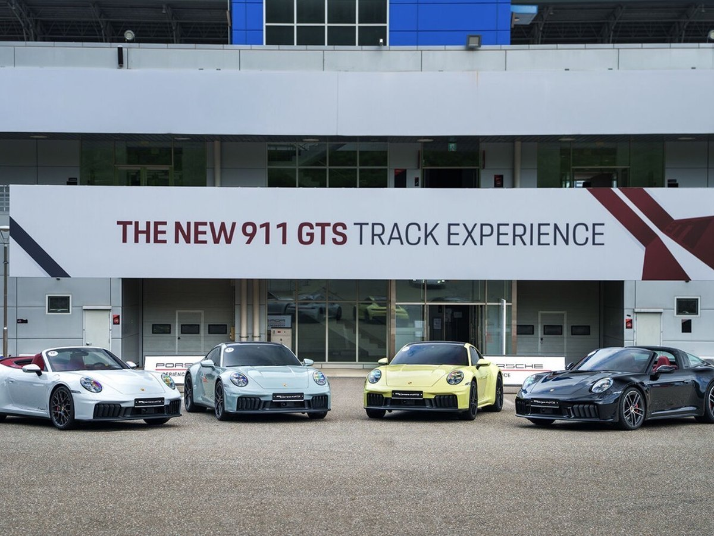
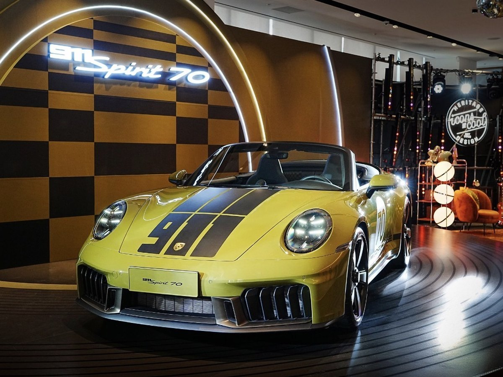
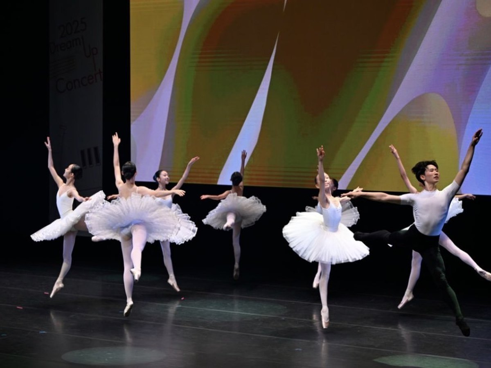
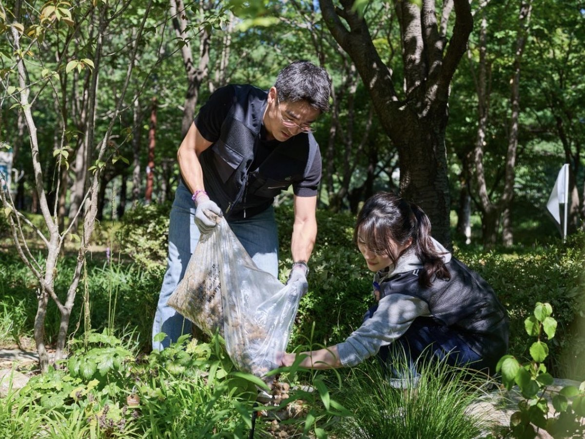
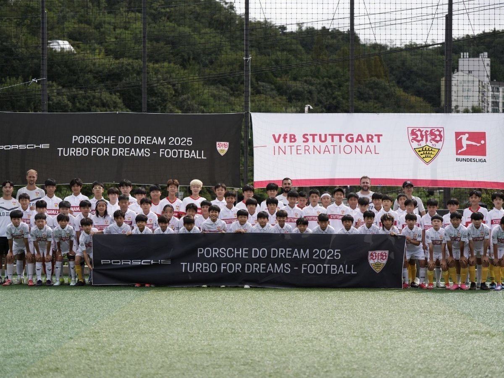
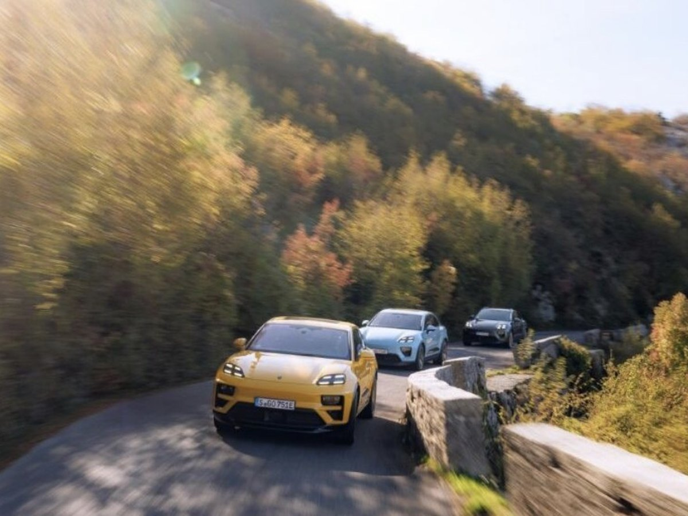
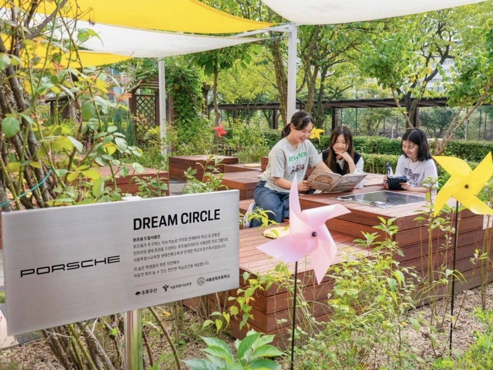

01
Porsche Korea
Public relations intern, Seoul, South Korea
I owned the LinkedIn channel end to end: model launches, track events, quarterly results, and the Porsche Do Dream social contribution program. Every post ran in Korean and English side by side, matched to global brand language and cleared locally before upload. I read the engagement data afterwards to work out which formats held attention, and took those findings into the next month's plan.
- RoleCopy, publishing, reporting
- ChannelLinkedIn
- ImagesPorsche Korea
- Year2025
911 GTS Track ExperienceLinkedIn

The New 911 GTS Media Track ExperienceMedia event 911 Spirit 70 & GT3LinkedIn
The New 911 Spirit 70 and the 911 GT3Model launch Dream Up ConcertLinkedIn
2025 Dream Up ConcertCSR event Bee’lieve in DreamsLinkedIn
“Bee’lieve in Dreams–Park” Gardening DayVolunteering Turbo for DreamsLinkedIn
Porsche Turbo for Dreams – FootballCSR program Q3 2025 ResultsLinkedIn
Porsche AG Third Quarter ResultsResults Dream CircleLinkedIn
2025 Porsche Dream Circle, Two New SchoolsCSR program